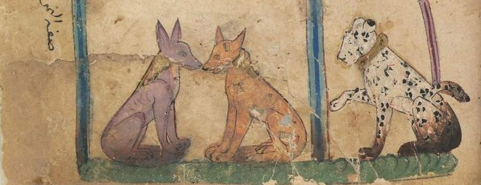
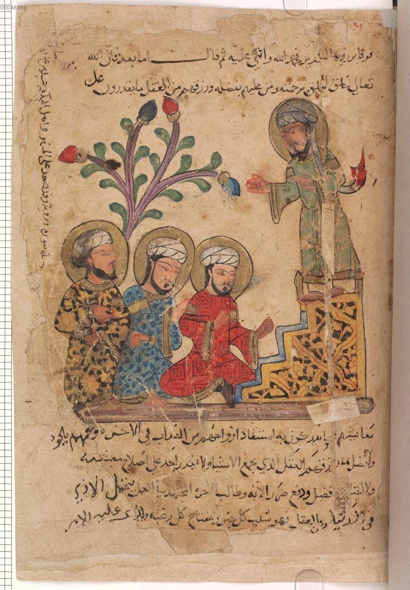

Detail of Bavarian State Library, Munich - BSB Cod.arab.616 Folio 44
Kalila and Dimna Retold: A Digital Art History Project
UNDER DEVELOPMENT
Click on the images below to discover the famous illustrated animal fables of Kalila and Dimna.
Find out more.
Who?
In the fall of 2016, students enrolled in Dr. Hussein Keshani's course ARTH 370 - Art 7 Literature of the Islamic World at UBC Okanagan in Kelowna, Canada, were assigned the task of creating a multimedia web animation. They had to discuss an episode from Kalila and Dimna using manuscripts held in various European museums and archives. Most had no
knowledge of Islamic world art history or web programming!
Kalila and Dimna
Kalila wa Dimna is a set of very popular tales translated and adapted into Arabic by Ibn al-Muqaffa (720-757CE). The tales originated in Ancient India, where they were written in Sanskrit and known as the Panchatantra. The tales are allegories that address the challenges of life and rulers featuring mostly animals – the two principal characters are two jackals, cautious Kalila and mischievous Dimna.
Illustrated Manuscripts
After the 13th century, illustrated Arabic manuscripts of the tales became popular complementing the rich oral storytelling tradition to which the tales belonged. This project includes folios from Bavarian State Library, Munich - BSB Cod. arab 616, Département des Manuscrits, BNF Paris, France - Manuscript Arabe 3467 and 3472,
Learning Goals
xxxx
Cite this
xxxx. Each module also has its own citation information available.
Bavarian State Library, Munich - BSB Cod.arab.616 Folio 20r
Barzouyéh Familiarizes Himself with the Locals (Lea Sebastianis)
Barzouyeh familiarizes himself with the locals in order to procure a copy of Kalila and Dimna for King Noushirewan.
Excerpt from the Subject-Matter of the Book of Kalila and Dimna, from the Pen of Almokaffa (Harsha Bharma)
A man discovers a pot of gold and hired labourers to help him extract it from the ground. He ordered his labourers to bring all the gold to his house while he stayed and watched the mine. His immense greed leads him to find out that the labourers were dispersing the gold amongst themselves.
The Noble Man and the Midnight Robbers (Stephanie Wills)
A rich man believed that thieves were breaking into his house in the middle of the night. Knowingly, the noble man pronounces aloud, with the help of his wife, that he has acquired all of his goods through robbery. The rich man gives a step by step account of how to rob, because he claims to be an expert. This inevitably leads the robbers to their demise.
Thou Shalt Not Covet Another Man’s Wife (Shauna Tangerman)
A man in love with a married woman, who was scared that she may get caught, had an underground tunnel dug from her house to the road so the two could meet in secrecy without fear. There was a well that served as a direction to this tunnel.
The wife’s husband arrived unexpectedly and the lover could not find the well which marked as a reference point to the tunnel. The lover tried to leave but returns because he is confused that the well is filled with water and claims he cannot find his way out, even though he just needed to continue forward. In the end, the husband finds the lover and inflicts violence.
The Human Race Compared to a Man Flying Off an Elephant (Sabrina Schoch)
A man flies from a furious elephant into a well where he upholds himself by straddling serpents that are protruding into the well. He uses branches above his body to hold himself up as well, so he does not fall into the dragon’s mouth beneath him. Unfortunately, he gets distracted by the honey he sees hanging from the tree and does not realize that two rats are gnawing at the branches he is holding on to. This inconsiderateness leads him to his death.
While the carpenter is away, a monkey who obeys the carpenter tries to copy the carpenter’s method of sitting on a piece of wood in order to break it into two pieces. The monkey completes this task unsuccessfully, by clamping his tail during his efforts. Afterward, the carpenter comes back, sees the bloody scene, and beats the monkey mercilessly.
A fox came to the woods where an object was hanging from a tree. When the wind brushed past the object it created a strange noise that the fox had never heard before. The fox broke the object but found it to be hollow. The fox learns that sounds can be misleading. Dimna uses this as a tool to convince the lion that the sound he is hearing is not a cause for alarm but simply harmless.
A woman finds her husband cheating on her. In the midst of his passion with his lover, she inserts a reed filled with poison into his rectum. He farts and she chokes on the poison and dies.
A crow made her nest near a serpent’s hole and when the crow hatched her young the serpent came and ate them. The crow spoke to her Jackal friend on what to do about the situation. The jackal suggested to the crow to put out his eyes, however, the jackal did not approve of this plan because of the danger involved. The jackal connects this story to fate of the swan in the swan and the crab story.
There was a swan who established a comfortable life in their pond but began to grow old and not be able to catch any prey. A crab passes by the swan and the swan lies to the crab saying that fisherman are planning to capture the fish in that pond and that the swan can bring the fish to a different pond to escape their fate. The swan took two fishes each day to the new pond but eats them on the way there. As the crab is travelling to the new pond they see these bones and decide to kill the swan. This serves as proof that a cunning person is usually demised by their own snares.
The Lion And The Ox (Shelby Legebokoff)
A lion promised a camel protection, however, when the lion could not find food, the entire group of animals started to starve.
Although the lion was initially opposed to killing the camel, the crow argued that interest in the multitude should be sacrificed for the individual.
The plan went on and the entire group pretended devotion and claimed they would sacrifice themselves for the lion with the camel naively agreeing to do the same. The wolf, crow, jackal, and lion all immediately turned on the camel devouring it.
The Fate of Dimna (Katie Mallard)
As a leopard was returning home he overheard the conversation of Kalila disapproving his brother’s deceitful ways, especially in regards to his behaviour with those in power. After hearing specifics about Dimna, and his recent actions of manipulating the lion, the leopard goes to tell the lion’s mother. Although the lion has a fair heart to give Dimna a trial, the story concludes with the jackal being put to death by torture.
The Falconer (Eric Chiu)
A falconer and a noble man’s wife have an affair. The noble man finds out and as punishment he orders his hawk to pluck out the falconer’s eyes.
The Ring Doves – The Emblem of Sincere Friends (Jack Wilson)
A ring dove and their queen are caught in a net by a Fowler. They flew to Zorak, a trustworthy rat, to help them be free. As Zirak disentangles the doves a crow watches and aspires to be friends with Zirak. After a long friendship, the crow helps Zirak move to a new location where he will less likely be trampled by humans.
The Ring-Doves (Tingting Niu)
After a long friendship, the crow helps Zirak move to a location where he will less likely be trampled by humans. A tortoise is at this new location and the crow tells the entire story of her and Zirak’s friendship.
The Owls and The Crows: The Story of the Elephant and the Hare (Alyssa Ware)
The crow tells a story of a time when elephants were suffering from hunger and thirst. In an area where many hares live, and have been trampled on by elephants, the elephant king hears there is a great fountain called the fountain of the moon. The elephant king and a few other elephants decide to go and talk to the hares to find this fountain.
The Tale of How Firouz Tricked the Elephant King (Nicholas Schmidt)
A wise hare named Firouz asked the elephant king to send her to his elephants, so she can explain to them details about the fountain of the moon.
Firouz explained to the group of elephants the dangers of drinking from this fountain and that she would show them if they came with her.
After returning to the land of the hares, the moon’s reflection in the water moves as the elephant dips his trunk in the fountain. This proves to him that he shall not disrupt the fountain as it makes the moon upset.
The Monkey and The Toroise (Arden Boehm)
King Mahir, an older frail monkey, is attacked by a younger monkey who banishes him to the river. At the river, King Mahir develops a relationship with a tortoise who later finds out that his wife is sick. The cure to his wife’s sickness is a monkey heart. The tortoise approaches the monkey claiming he has fruit at his island for the monkey to feast on. After swimming the tortoise confesses only a monkey heart will save his wife, but the monkey lies and says he did not bring his heart with him and returns back to the river.
The Danger of Haste in an Affair Which We Are But Imperfectly Acquainted (Jess Murphy)
A man hangs a jar of honey and oils over his head and dreams about the multitude of ways that it can make him rich. As he pokes at the jar it breaks and his hopes of being wealthy are shattered.
A Man and His Jar, His Weasel Friend and His Runaway Mind (Siobhan Fitzpatrick)
The monk’s wife bores him a son. As she is bathing she asks him to take care of their son, but the monk is called to a religious order at the courts. He leaves his son alone with a trusted weasel. As the monk is away a snake tries to attack the son, but the weasel rips the snake to shreds. The monk returns home and mistakes the blood on the weasel for the blood of his son and rage-fully kills the weasel only to find out that his son is safe in his crib.
The Cat and the Rat (Donnalee Davidson)
Roumi the cat and Feridoun the rat live near each other. One day a Fowler catches Roumi in a net and Feridoun stumbles upon the predator. Although the rat was happy to see his enemy trapped, the rat observed a weasel following him and an owl above him. He was surrounded. Feridoun negotiates with the cat that in order to let Roumi out, Roumi must protect him. The plan works out as follows.
Spread Your Wings Free Bird: You Are Not a Caged Dog (Milan Hecimovic)
A bird named Fanzah develops a close relationship with a young prince. Her son in the prince’s home is killed by the young prince when Fanzah is away. Fanzah vengefully darted at the eyes of the prince and flies away. The King begs for Fanzah’s return but she never does.
The History of Iladh, Beladh, Irakht, and the Wise Kibarioun (Shannon Crane)
A king named Beladh has very powerful visions and shares them with the Brahims. The Brahims use this information to conspire against the King. The King’s wife encourages the King to seek council, who maintained that everything would be fine if the king waited seven days. Jealousy between the wives ensue but in the end, patience and seeking council are revealed as valuable virtues.
The Fables of Bidpai: The Traveler and the Goldsmith (Alexa Harwood-Jones)
A goldsmith falls into a pit with a snake, tiger, and monkey. A traveler comes to help everyone out but the animals are the first to land. They warn the traveler to not let the goldsmith out because men are incapable of gratitude. Regardless, the traveler helps the goldsmith out. It is later revealed that the traveler should have listened to the animals.
The King’s Son and His Companions (Ameen Shakeel)
Four noble sons meet on the road but have differing understandings of what rules overall. They each try their best, in their particular ways, to find food to eat.